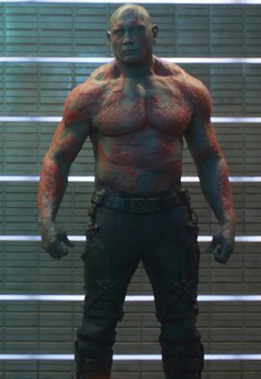
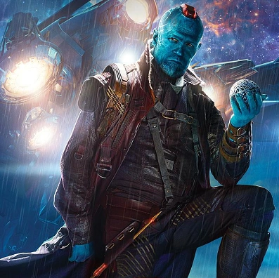
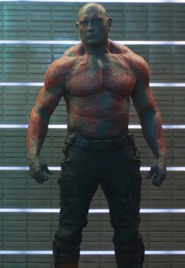
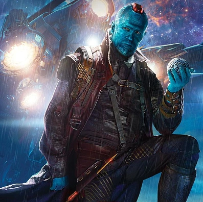
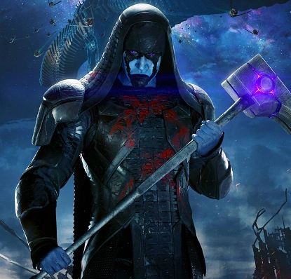
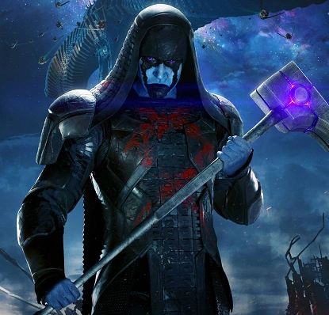

La peli sigue a Peter Quill, un humano que fue secuestrado de la Tierra cuando era niño y ahora se hace llamar Star-Lord, un saqueador galáctico. Cuando roba un orbe misterioso, se convierte en el objetivo de varios villanos, entre ellos el poderoso Ronan el Acusador.
Pero el orbe no es un simple chiche: es una Gema del Infinito, capaz de destruir planetas. Por eso, Peter termina aliándose con un grupo de inadaptados para evitar que Ronan destruya el universo.
Personajes principales
Star-Lord (Peter Quill): Terrícola con actitud, amante de la música de los 80 y líder improvisado.
Gamora: Hija adoptiva de Thanos, experta en combate. Quiere redimirse de su pasado.
Rocket: Un mapache genéticamente modificado, sarcástico y experto en armas.
Groot: Un árbol que solo dice "Yo soy Groot" (pero su amigo Rocket lo entiende todo).
Drax el Destructor: Guerrero musculoso que quiere vengar la muerte de su familia.
Yondu: Alienígena de piel azul y líder de los Ravagers.
Nebula: Guerrera cibernética, hija adoptiva de Thanos. Fría, fuerte, pero con corazón oculto.
Ronan el Acusador: Villano kree que quiere destruir Xandar usando el orbe.
Datos Curiosos
La nave Milano: está inspirada en un avión cohete de verdad, y tardaron 14 semanas en construir el set.
Vin Diesel: grabó “Yo soy Groot” en más de 15 idiomas, incluso para Baby Groot.
El nombre "Milano": es por Alyssa Milano, actriz de los 80 que le gustaba a Peter de niño.
Escena de baile: Chris Pratt improvisó su baile en la pelea final. ¡Y lo dejaron porque quedó épico!
Rocket y Oreo: Rocket está basado en un mapache real llamado Oreo, que fue modelo para sus movimientos.


 



 
